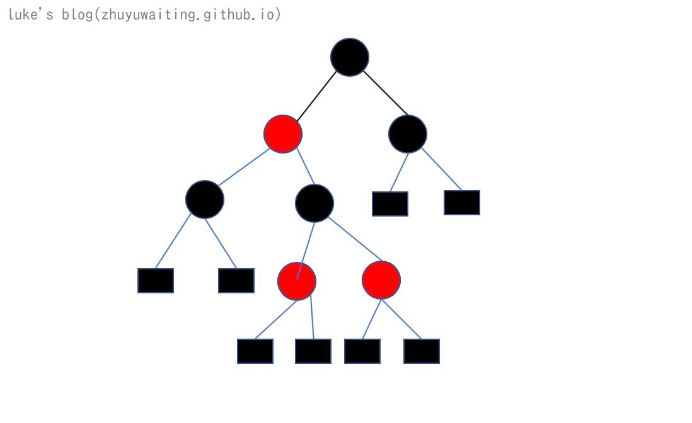

前言
TreeMap从字面上来说就跟树脱不了干系，既然TreeMap支持排序，那么基本就是二叉树的扩展。接下来就来看看TreeMap的使用，以及内部基础结构。
使用：
1 | public static void main(String[] args) { |
由实例可以知道，TreeMap是有序的hash表结构，并且支持自定义比较器Comparator进行自定义排序方式。
TreeMap源码分析
数据结构是一切的基础
1 | private final Comparator<? super K> comparator; |
上述代码中，可以看出来TreeMap的结构是一颗二叉树，root表示根节点，有左子树left,右子树right，父节点parent。熟悉数据结构则可以明白color=BLACK 表示这颗树是一颗红黑树。

红黑树的基础知识可以通过 30张图带你彻底了解红黑树 进行了解
重要函数
put
1 | public V put(K key, V value) { |
说明:
- TreeMap进行插入数据节点的时候，会进行类型检查和空指针检查
- 如果未定义比较方法，会使用默认的比较方法
- 与而插入插入一直，如果小于则查找左子树，如果大于则查找右子树
- 节点插入树中后会进行红黑树的平衡调整。
get
1 |
|
说明: 获取key对应的元素相对来说比较简单，就是二叉查找树的查找过程，如果小于当前节点则找左子树，大于当前节点找右子树。
remove
1 | public V remove(Object key) { |
说明：删除的操作较为复杂，由于删除操作会进行树的修正，和红黑树的平衡调整，均为红黑树的基本操作，可以通过数据结构红黑树章节来了解。
总结：
红黑树的使用起来比较简单，内部实现说简单也简单，复杂也复杂，主要复杂的点在红黑树的数据结构维护上，排除红黑树的维护操作，TreeMap的结构相对来说比较简单，其主要是利用二叉查找树的特性，通过比较函数来维护一颗二叉查找树，通过二叉查找树来进行排序。